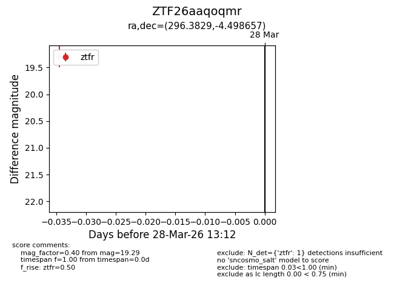
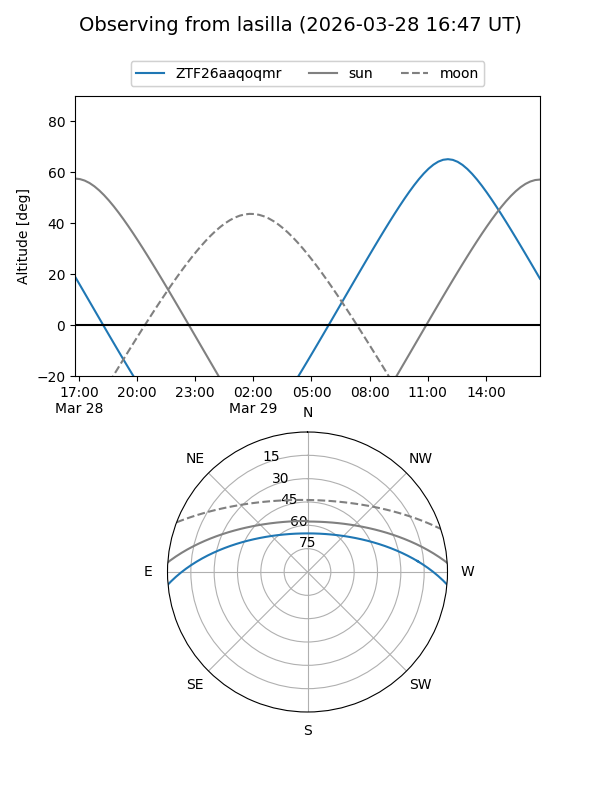
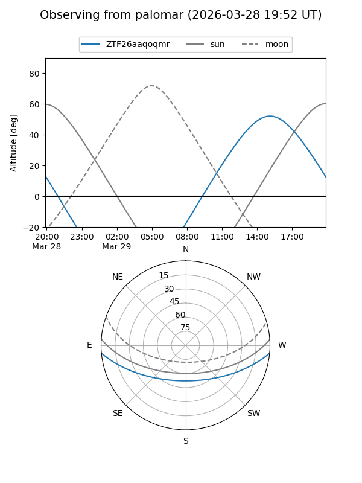

ZTF26aaqoqmr
Target ZTF26aaqoqmr at 2026-03-28 13:15
Aliases and brokers:
FINK: link
Lasair: link
ALeRCE: link
alt names
ZTF26aaqoqmr (ztf,fink_ztf)
Coordinates:
equatorial (ra, dec) = 296.3829,-4.49866
equatorial (HMS+DMS) = 19:45:31.91,-04:29:55.17
galactic (l, b) = (35.0881,-14.07798)
Flags:
Photometry:
last ztfr=19.29
1 ztfr detections
Lightcurve

Visibility


Additional plots